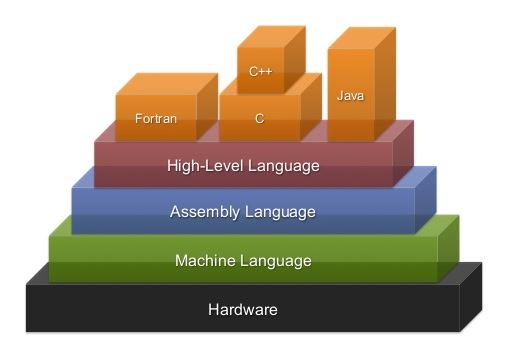
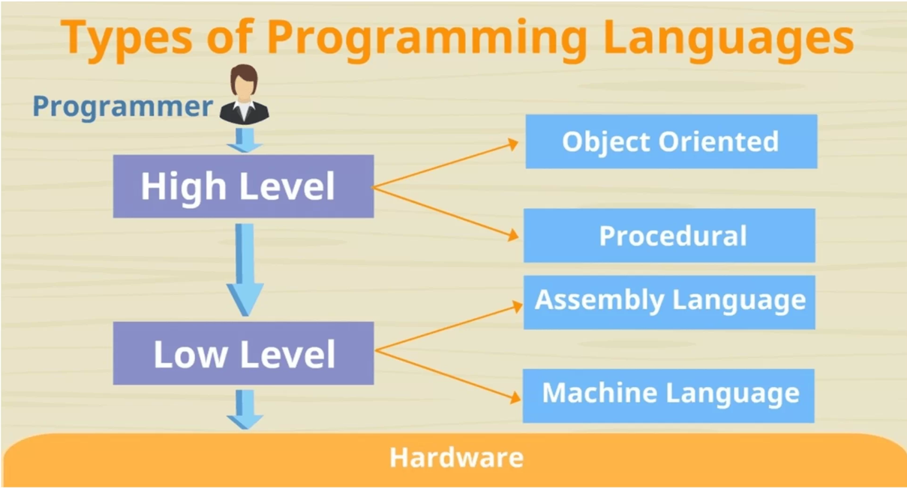
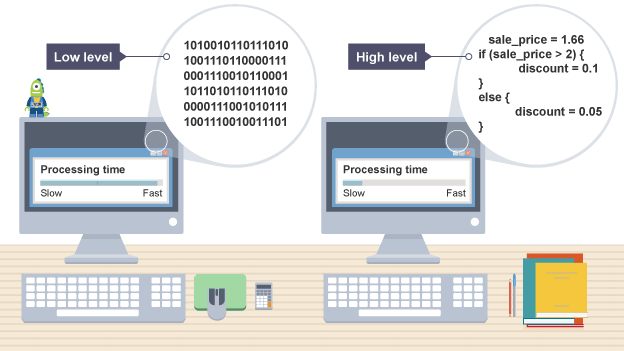

Introduction
Brief overview of the distinction between high-level and low-level programming languages.
Importance of understanding these categories in the context of software development.

High-Level Programming Languages
Definition and Characteristics
- Explanation of high-level languages being closer to human language.
- Abstraction and automation of complex tasks. Examples:
- Python
- Java
- Ruby
- C#
Advantages
Readability and Ease of Use:
- Syntax designed for human understanding.
- Reduces the chance of errors and enhances collaboration.
Portability:
Code written in high-level languages is usually portable across different platforms.
Productivity:
- Faster development due to built-in libraries and higher-level abstractions.
Abstraction:
Hides low-level details, making it easier to focus on solving problems.
Disadvantages
Execution Speed:
- Generally slower compared to low-level languages.
- Interpreter or compiler adds an extra layer of processing.
Resource Usage:
High-level languages may use more system resources.
Less Control:
Reduced control over system-level details.
Low-Level Programming Languages
Definition and Characteristics
- Explanation of low-level languages interacting more closely with hardware.
- Direct manipulation of computer hardware.
- Examples: Assembly language, machine code.
Advantages
- Execution Speed: Code is closer to machine language, leading to faster execution.
- Resource Efficiency: More direct control over system resources.
- Closer to Hardware: Useful for tasks that require specific hardware interactions.
Disadvantages
- Complexity: Writing code at a low level is more complex and error-prone.
- Portability: Code may not be easily portable across different systems.
- Learning Curve: Steeper learning curve due to dealing with hardware details.


Choosing Between High-Level and Low-Level Languages
Project Considerations
- Factors influencing the choice: project requirements, development time, resources available.
Developer Skill Set
- Assessing the team's expertise in high-level or low-level languages.
Performance Requirements
- Determining if the project demands high execution speed or can benefit from higher-level abstractions.
Flexibility and Control
- Weighing the need for control over hardware details against the desire for a more abstract and readable codebase.
Conclusion
Recap of key points about high-level and low-level languages.
Emphasize the importance of choosing the right language based on project requirements.
Encourage exploration and experimentation with both types of languages for a well-rounded skill set.